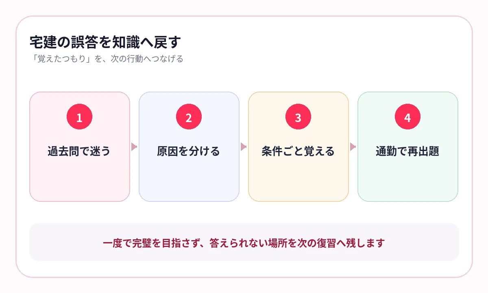

数字は覚えたのに、誰に適用するのか、どの例外だったのかで迷っていませんか？
宅建では、用語や数字を知っていても、主体、取引の種類、時期、例外が変わると答えが変わります。
暗記する単位を「〇日」「〇％」だけにせず、条件を含む一つの問いにすると、過去問で使える知識になります。
試験範囲を、暗記の種類で分ける
宅建試験は、権利関係、宅建業法、法令上の制限、税・その他など、性質の異なる分野から出題されます。
宅建業法
主体、義務、書面、報酬、保証、監督処分を整理します。
権利関係
要件、当事者、効果、第三者との関係をつなぎます。
法令・税その他
区域、許可、制限、数字、税率・評価の条件を比較します。
数字には、必ず「主語」を付ける
数字だけをカードにすると、似た期限や割合が混ざります。主語と場面を一緒に答えます。
- 誰に関する数字か
- 何の手続・制限か
- いつから数えるか
- 例外や別条件はあるか
「何日」だけ答えられても不十分です。「誰が、何を、いつから何日以内」まで言える形にします。
{kind=link}

原則と例外を、別ページにしない
宅建のひっかけは、原則を知っているだけでは避けにくいものがあります。例外がある論点は、同じページの左右や上下で比較します。
| 原則側に置くもの | 例外側に置くもの |
|---|---|
| 通常の主体・取引 | 自ら売主、媒介、代理など場面の違い |
| 基本期限・上限 | 特約、相手方、手続による変化 |
| 一般的な効果 | 善意・悪意、第三者、対抗要件による違い |
教材の比較表をそのまま使い、片方を隠して答えると、違いを一問で確認できます。
横にスワイプして画像を確認できます


過去問の誤答を、4種類に分ける
知識がない
根拠ページを読み、用語と制度の全体像を確認します。
数字を混同
主体・起算点・例外を含む問いへ作り直します。
原則と例外を逆にした
同じページで対比し、両方を答えます。
問題文を読み違えた
否定、主体、時点に印を付け、過去問で読み方を練習します。
間違えた選択肢を覚えるのではなく、間違えた理由を次の暗記へ残してください。
通勤は数字、机では過去問
AI暗記シートでは、宅建テキストやPDFの重要ページを取り込み、用語・数字・制度を隠して出題できます。
通勤中は短い知識確認、机では過去問。過去問で「あやしい」と分かったページを次の通勤で優先して出すと、学習がつながります。
- 教材名：宅建業法｜8種制限｜数字
- 教材名：権利関係｜意思表示｜第三者
- 教材名：法令上の制限｜都市計画法｜許可
- 教材名：税その他｜固定資産税｜基準日
よくある質問
宅建は数字をまとめて覚えるべきですか？
数字一覧は確認に便利ですが、主体・手続・起算点・例外を付けて答えられる形にします。
過去問と暗記はどちらを先にしますか？
基本事項を理解したら早めに過去問へ進み、誤答から不足知識を特定します。暗記と過去問を往復します。
法改正がある場合はどうしますか？
受験年度に対応した教材と公式情報を使い、古いページは更新または削除してください。
参考情報
試験範囲・制度は公式情報、復習方法は学習科学の研究を参照しています。
数字を、過去問で使える知識へ
主体・期限・例外を、一つの教材で反復
宅建テキストやPDFの重要語句を隠し、弱点を記録。通勤では知識、机では過去問の学習サイクルを作れます。
iPhone・iPad対応／3枚まで無料保存／継続利用は800円の買い切り